Overige Albums
Drake heeft maar liefst 11 albums. Zijn eerste album was in 2009 en de naam van het album is So Far So Gone. Zijn tweede album Thank Me Later. Is in 2010 uitgekomen en is maar liefst genomineerd voor zeven prijzen. Het album telt 14 nummers en telt drie samenwerkingen op het aobum. Zijn derde album Take care die in 2011 is uitgekomen heeft maar liefst twee belangrijke prijzen gewonnen de Grammy award voor beste rap album en de Juno Award voor rap recording van het jaar. Drake zijn vierde album Nothing Was the Same. Word beschouwd als een van zijn beste Album. Nothing Was the Same kwam uit in 2013 en heeft maar liefst 12 prijzen gewonnen.
In 2015 kwamen maar liefst 2 albums uit If Youre Reading its to Late en What a Time to Be Alive. If you Reading its To Late kwam onverwachts uit daarom werd het een speciaal album gevonden ook omdat het heel goed verkocht werd en veel prijzen heeft gewonnen. What a Time to be Alive is een album met de Amerikaanse rapper Future. In 2016 had Drake nog een klein album gemaakt genaamd Live at Jazzwerkstatt Peitz. Hij heeft dit album gemaakt met drie andere artiesten. Dit album werd niet goed ontvangen door zijn fans en word als een van zijn mindere albums gezien. Verder heeft drake in 2016 nog een album gemaakt genaamd Vieuws, het album is 6x platina gegaan. Een jaar later heeft Drake nog More Life uitgebracht en in 2018 het album scorpion dit is een dubbelalbum met 25 nummers.
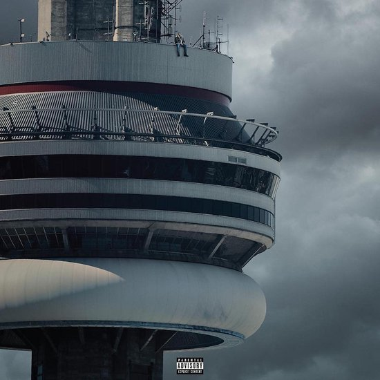 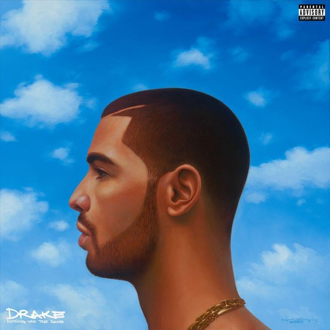
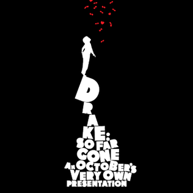
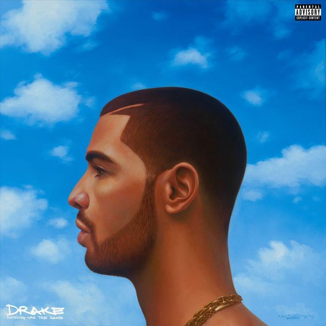
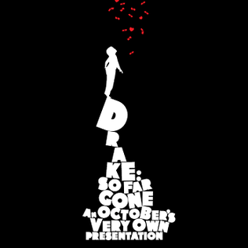
 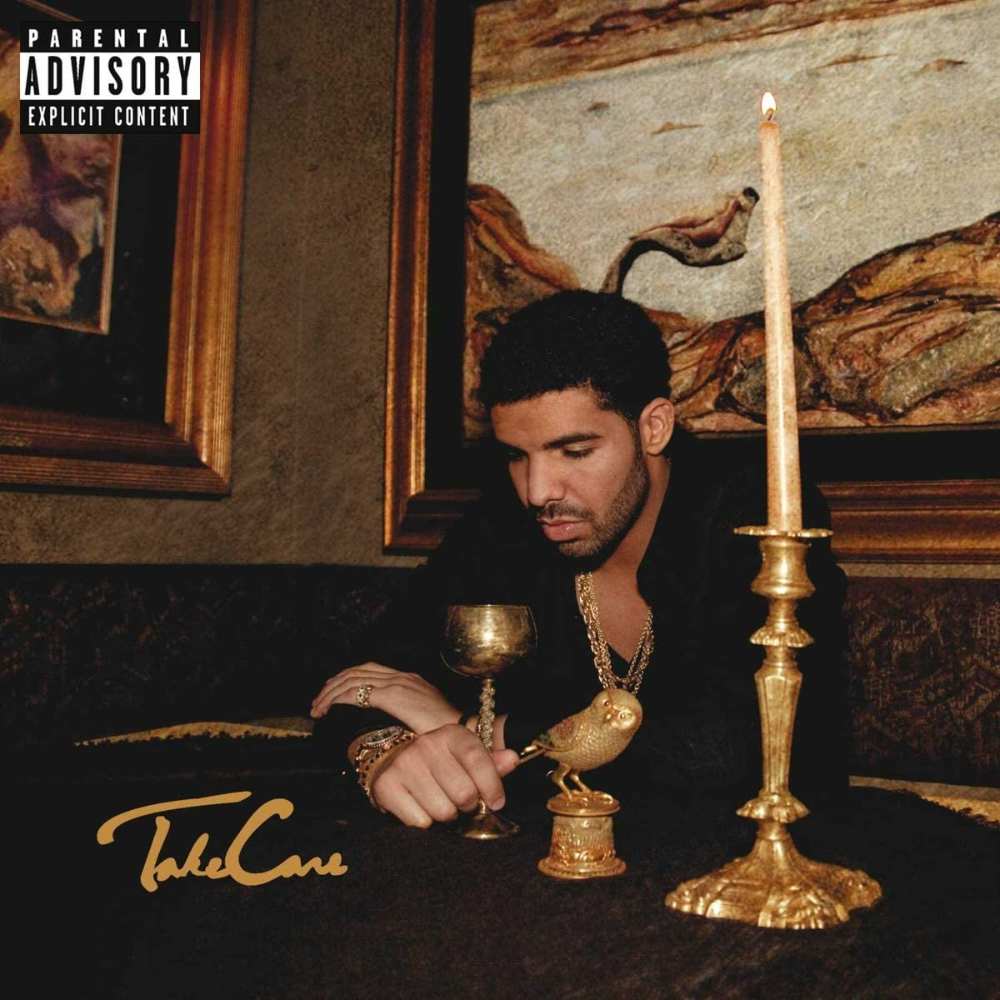
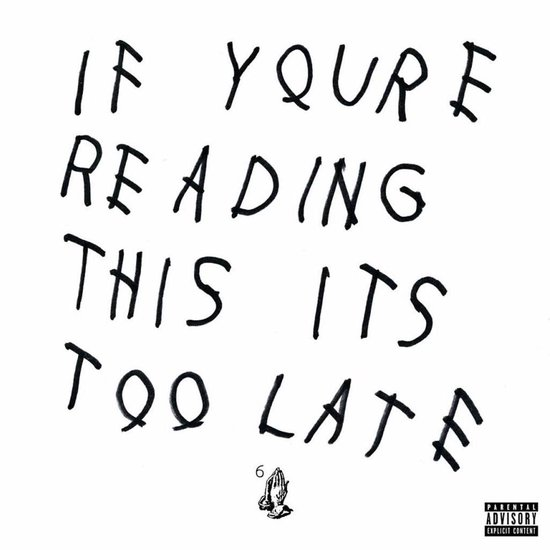
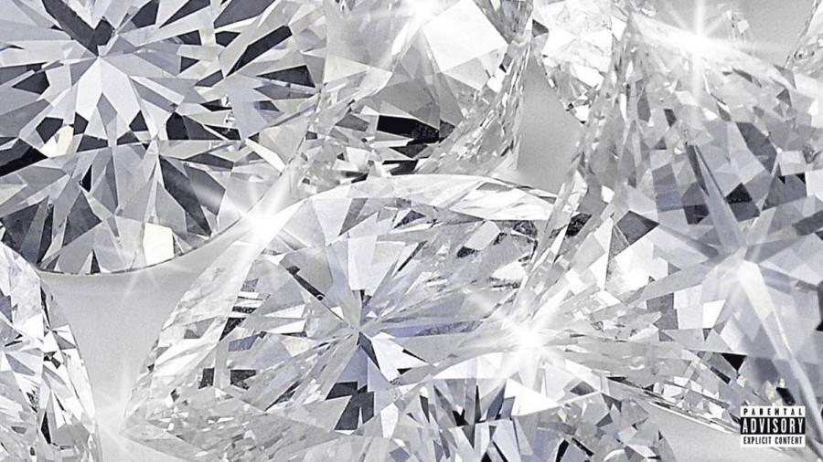
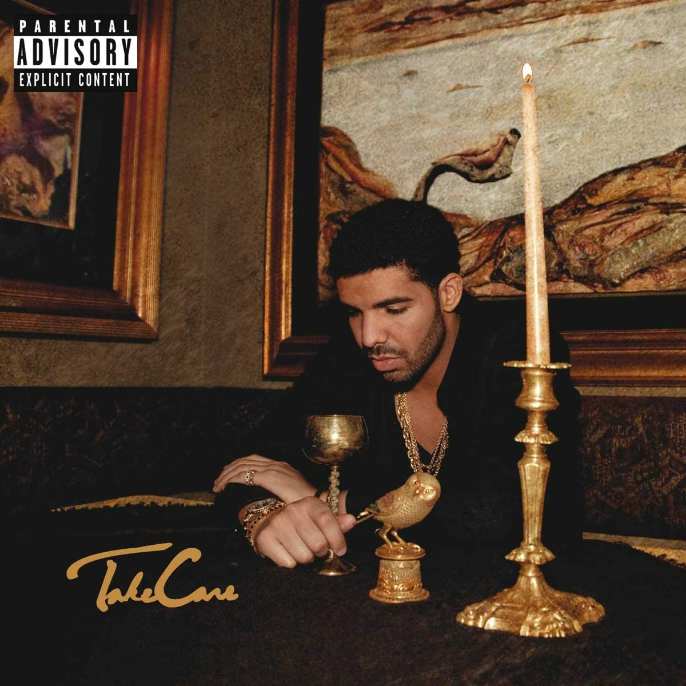
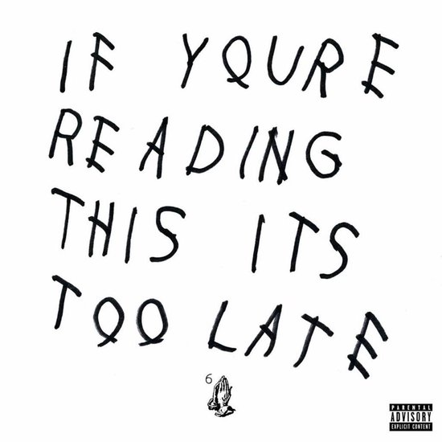
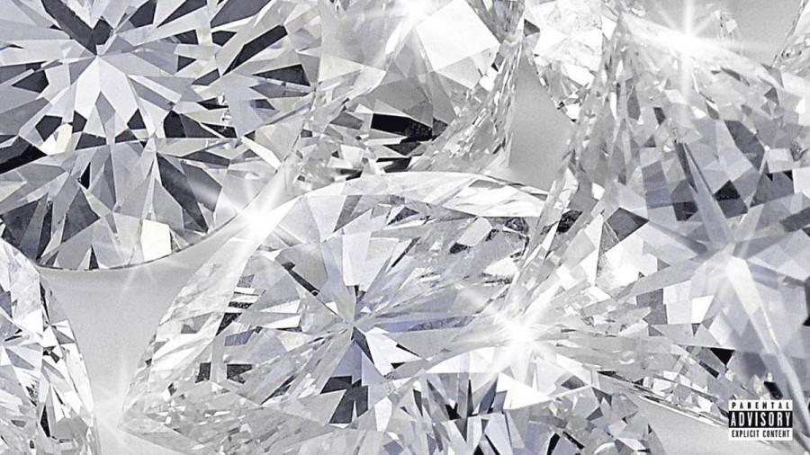